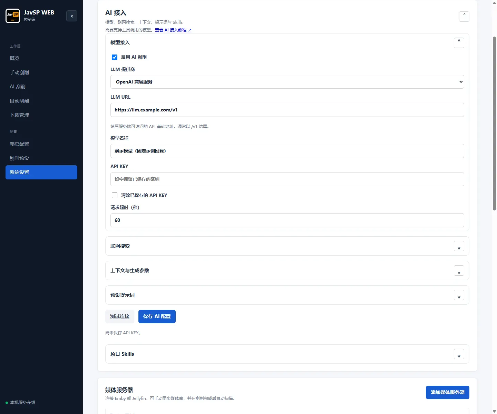
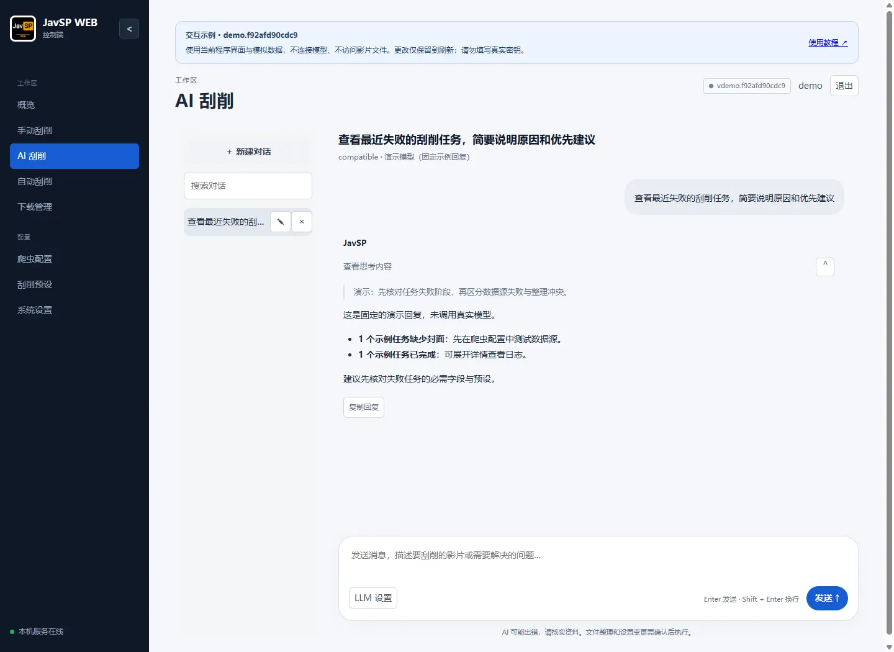

使用教程 / 03
AI 助手
配置模型和联网搜索，管理对话、上下文、提示词与 Skills，再按需启用 AI 刮削。
连接 AI 模型
AI 助手可以帮你分析失败任务、查找影片资料和调整刮削预设。使用前，请准备模型服务商提供的 API 地址、模型名称和 API KEY，再用管理员账号打开“系统设置 → AI 接入”。
- 填写连接信息。选择 LLM 提供商，填写 LLM URL、模型名称和 API KEY。请选用支持“工具调用”的模型，AI 才能读取任务、查询预设和使用爬虫。
- 测试连接。点击“测试连接”，确认没有连接或工具调用错误。
- 启用 AI。勾选“启用 AI 刮削”，点击“保存 AI 配置”。
以后修改配置时，API KEY 留空即可保留原密钥。需要删除密钥时，勾选“清除已保存的 API KEY”后保存。
| 提供商 | LLM URL | 填写说明 |
|---|---|---|
| OpenAI 兼容服务 | https://你的服务地址/v1 | 按服务商说明填写模型 ID 与密钥，不能填写聊天网页地址。 |
| DeepSeek | https://api.deepseek.com/v1 | 填写账号可用且支持工具调用的模型。 |
| Ollama | http://host.docker.internal:11434/v1 | Docker 访问宿主机的示例；Ollama 需监听容器可访问的地址，Linux 需配置 host-gateway。通常无需密钥。 |
| Anthropic | https://api.anthropic.com/v1 | 选择“Anthropic”，填写服务商提供的模型名称和密钥。 |
LLM 超时默认 60 秒，可设 10～120 秒。容器中的 127.0.0.1 指向容器自身，外部模型服务需填写容器能访问的地址。

开始对话
进入“AI 刮削”，点击“新建对话”，输入你要处理的问题。例如：
查看最近失败的刮削任务，简要说明原因，并告诉我先处理哪一项。回复中的“工具记录”可以查看 AI 查询过的任务和资料。需要继续追问时，在同一会话发送消息；换一个问题时可以新建对话。左侧历史列表可搜索、重命名和删除会话，手机端点击会话列表按钮打开。
点击“停止生成”可结束当前回复。已经确认执行的操作仍会生效，删除会话也不会删除刮削任务。

让刮削任务使用 AI
打开“刮削预设 → 爬虫”，勾选“启用 AI 刮削”，并在系统 AI 设置中开启“允许 AI 联网搜索”。
- 普通爬虫失败后再用 AI：勾选“当所有爬虫刮削失败时启用 AI 刮削”，适合日常使用。
- 直接使用 AI：取消上述勾选，影片资料将由 AI 搜索和提取。
保存预设后，使用该预设创建的新任务便会按所选方式刮削。
设置联网搜索
AI 查找影片资料需要联网搜索。在“系统设置 → AI 接入 → 联网搜索”勾选“允许 AI 联网搜索”。如果只想分析已有任务或预设，可以关闭此项。
Bing RSS 或自建 SearXNG
Bing RSS无需搜索密钥，使用服务器网络访问 Bing。也可选择 SearXNG，填写自建实例地址，例如 https://search.example.com，并在实例的 search.formats 中启用 json。目前不支持需要额外鉴权请求头的实例。
选好搜索服务后，点击“测试联网搜索”。测试成功后点击“保存 AI 配置”；如果失败，先检查服务器能否访问搜索服务。
| 设置 | 默认 / 范围 | 作用 |
|---|---|---|
| 最多搜索结果数 | 8 / 1～20 | 找不到所需资料时可适当增加。 |
| 最多读取网页数 | 3 / 1～8 | 决定一次查阅多少个资料页面，不能超过搜索结果数。页数越多，通常耗时越长。 |
| 每页最多提取字符数 | 16000 / 1000～32000 | 页面资料较长时可增加；经常提示内容过长时可减小。 |
| 搜索与网页请求超时 | 15 秒 / 5～60 秒 | 搜索和每个来源页请求的等待时间；多页依次处理，总耗时可能更长。 |
调整回答长度与上下文
初次使用可先保留默认值。“上下文”是 AI 一次回答能参考的信息总量，包括你的问题、之前的对话和查到的资料。请按模型服务商公布的容量设置上限。
| 设置 | 默认 / 范围 | 如何选择 |
|---|---|---|
| 最长上下文 | 65536 / 8192～1048576 Token | 不要超过模型支持的上下文长度。处理较多任务或网页时可能需要更大容量。 |
| 最大输出长度 | 4096 / 256～65536 Token | 限制单次回复的长度。回答经常中途截断时可增加，但必须低于上下文及模型输出上限。 |
| 最多携带历史消息数 | 16 / 2～40 | 决定 AI 能参考多少条近期对话，用户提问和 AI 回复各算一条。 |
| 采样温度 | 留空 / 0～1 | 留空由模型决定，低值偏向稳定。不支持此参数的模型请留空。 |
| 每次分析最多轮数 | 6 / 1～12 | 任务分析经常达到轮数上限时可增加；轮数越多，可能耗时越长。 |
| 每次分析最多工具调用数 | 12 / 1～24 | 限制 AI 一次提问中查询任务、搜索网页等操作的次数。 |
对话较长时，AI 可能不再参考较早的消息。如果它遗漏了之前的要求，可以在新消息中补充重点。
出现“内容过长”提示时，先缩小问题范围，例如只分析最近几个失败任务，或减少读取网页数。每个会话最多保存 40 条消息，达到上限后请新建会话。
设置回答偏好与 Skills
希望 AI 始终简短回答，或先说明原因再给建议，可以在“系统设置 → AI 接入 → 预设提示词”填写偏好，例如“回答先给结论，最多列三条建议，需要时再展开”。保存后，在下一次提问中生效。想恢复原来的回答方式，点击“恢复默认提示词”后保存。
Skills 是供 AI 处理特定任务时参考的操作说明。例如，你可以添加一份“失败任务诊断”说明，让 AI 每次按固定步骤检查。普通使用可保留内置 Skills；需要自定义时，打开“项目 Skills”，点击“添加 Skill”，按下面的格式填写并保存：
---
name: diagnose-library
description: 分析失败任务，按原因分组并给出可验证的建议
---
# 失败任务诊断
先查看任务详情及其预设，再按失败阶段归类。
区分已确认原因和需要进一步核实的线索。
默认只给结论和一项优先建议，按需展开任务明细。name 填写技能名称，description 简要说明用途，正文写具体步骤。保存后可再次编辑，不再需要时可删除；内置内容可通过“恢复内置 Skills”找回。
AI 提议整理文件、修改预设或保存爬虫时，请先检查操作预览，确认无误后点击“确认执行”。
常见问题
- 连接成功但没有调用工具：检查模型是否支持工具调用。
- HTTP 401 / 403：核对密钥、账号权限和服务地址。
- HTTP 400 或温度错误：先将温度留空，再核对输出上限和服务商支持的参数。
- SearXNG 返回 403 或格式错误：确认已启用 JSON，且允许应用服务器访问。
- 搜索有结果但刮削失败：摘要不等于有效来源，请检查详情页访问、预设代理和必需字段。
- 没有思考内容：并非所有模型都提供思考过程，没有显示也可以正常阅读回复。